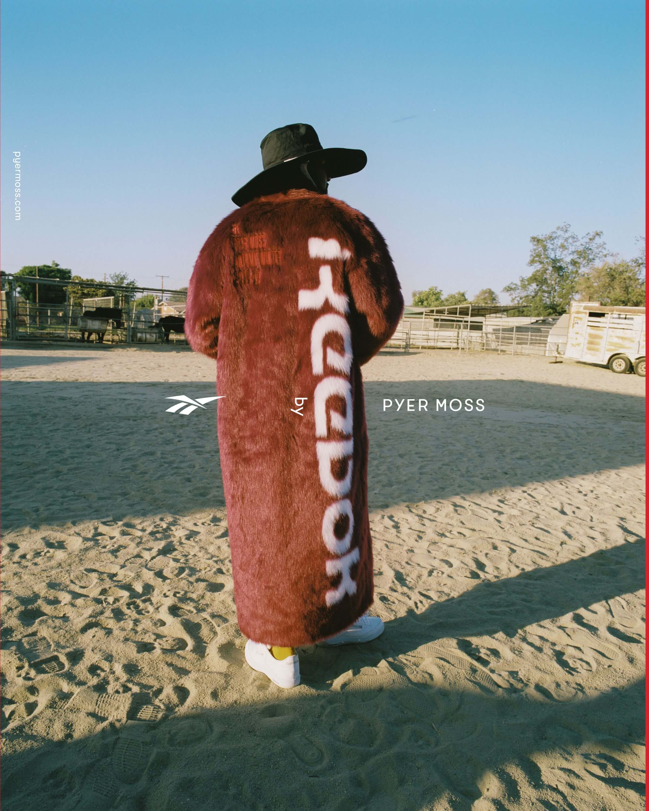
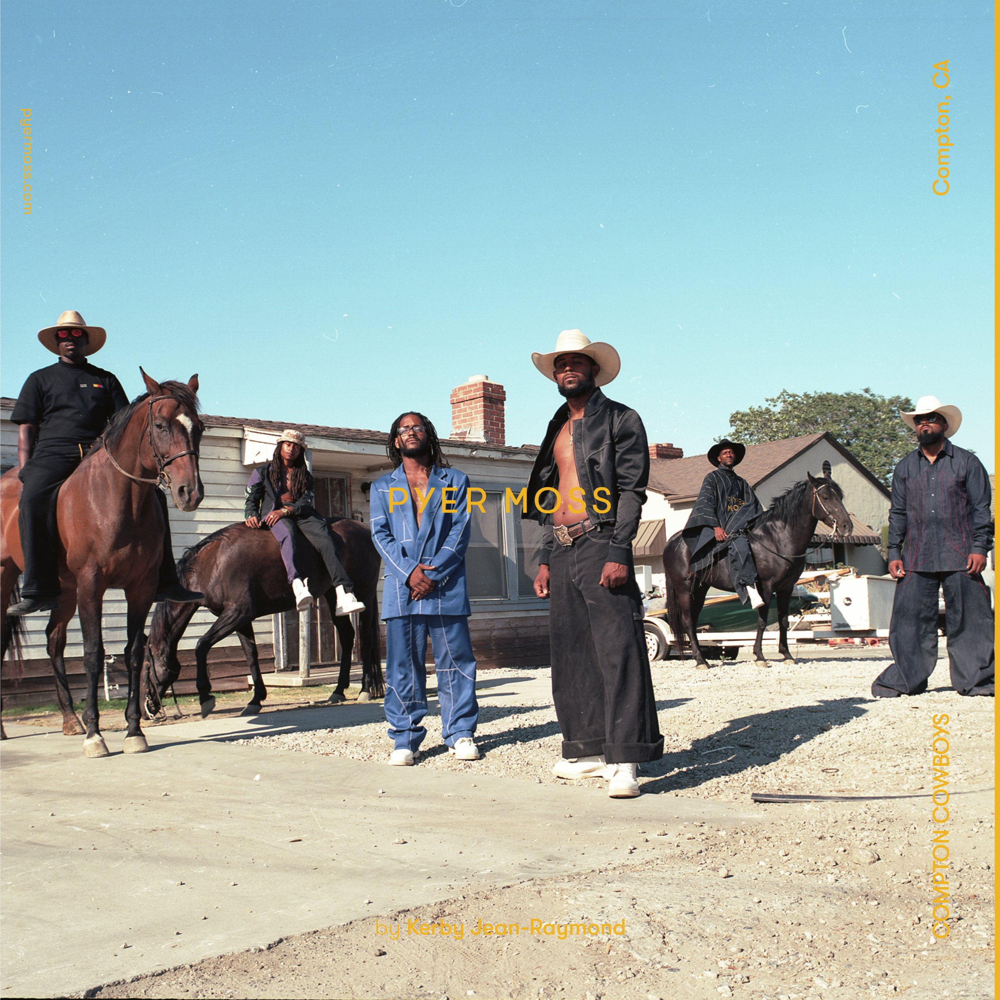
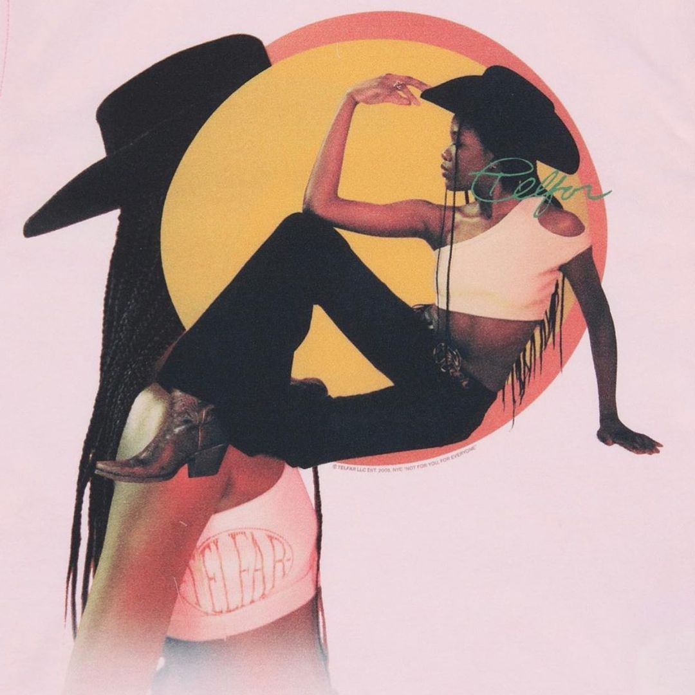
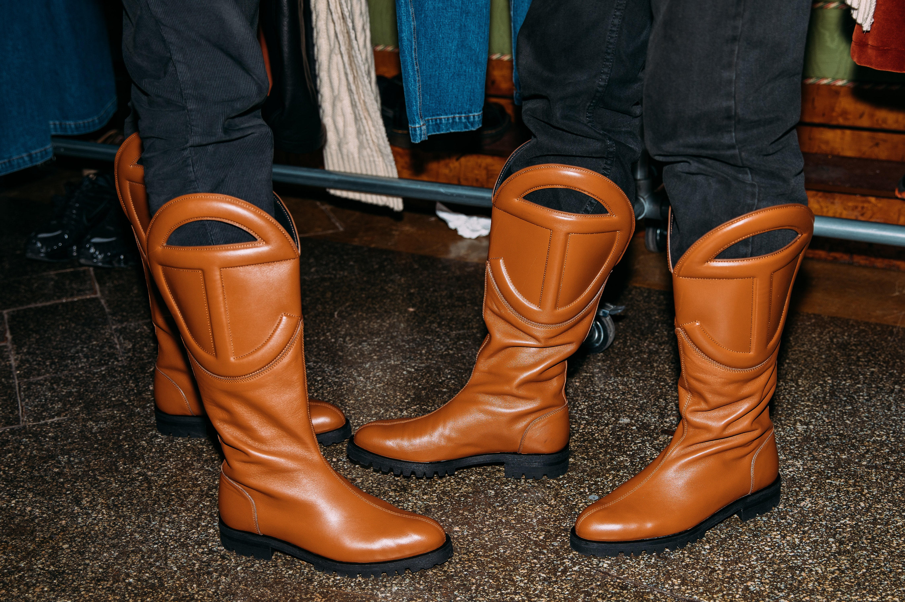
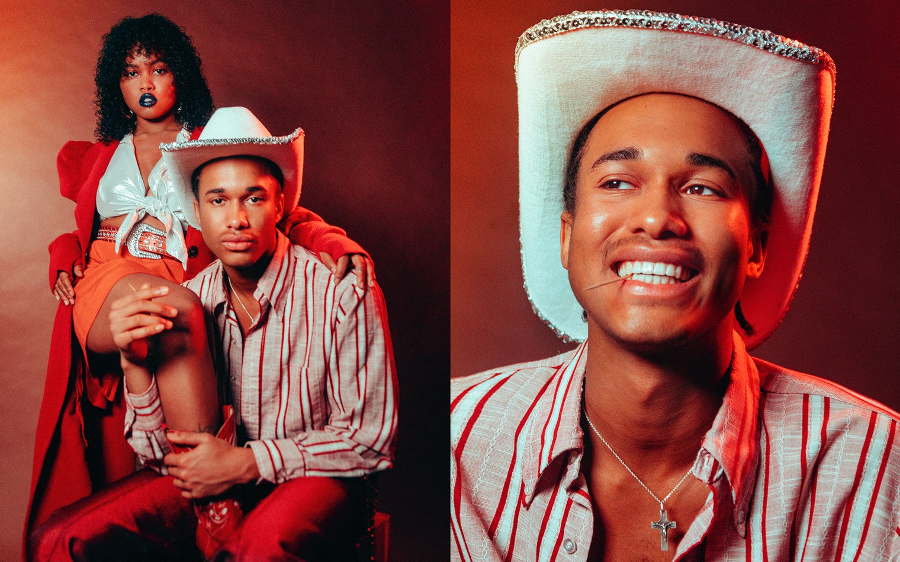
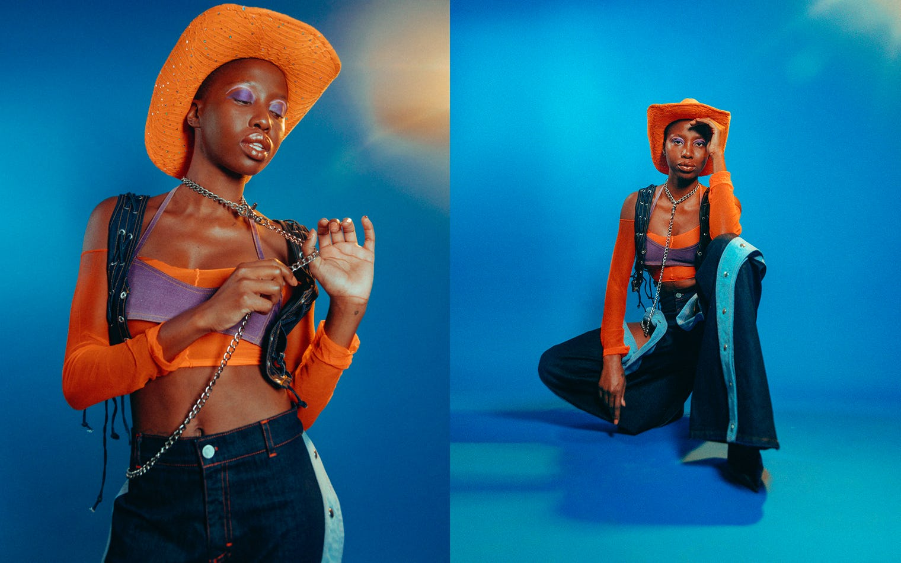
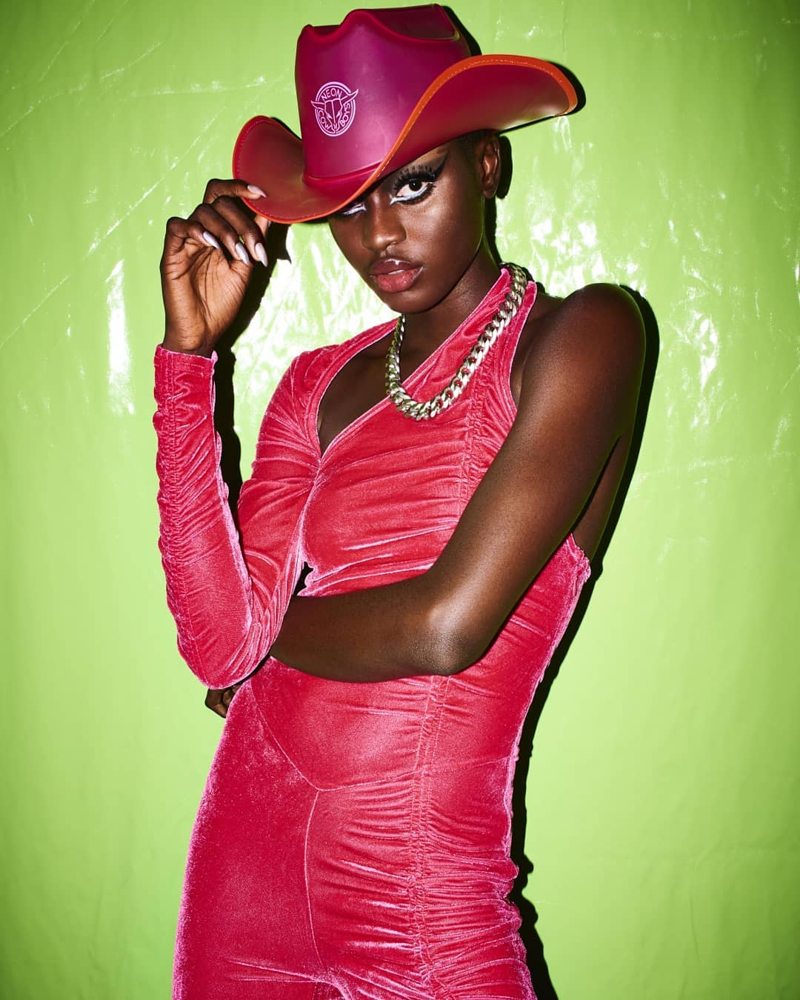

IT'S IN THE MUSIC & THE FASHION
Solange, an american R&B, artist included extensive western imagery in her latest project influenced in part by her hometown of Houston, Texas. This is a testament to the personal connection black people have with western/cowboy culture.